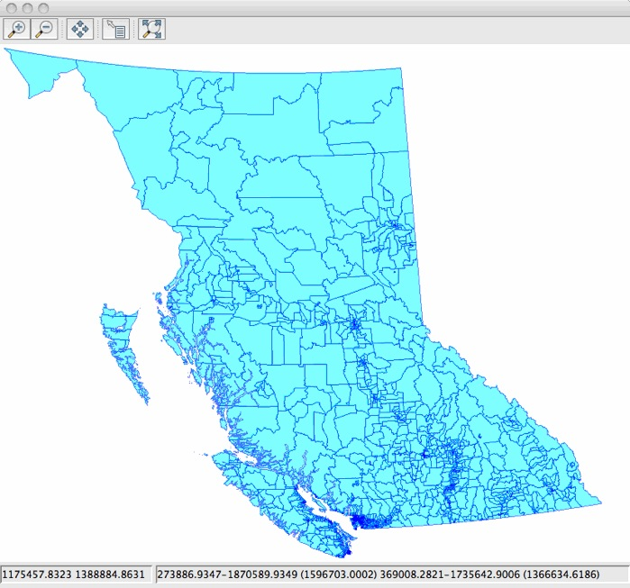
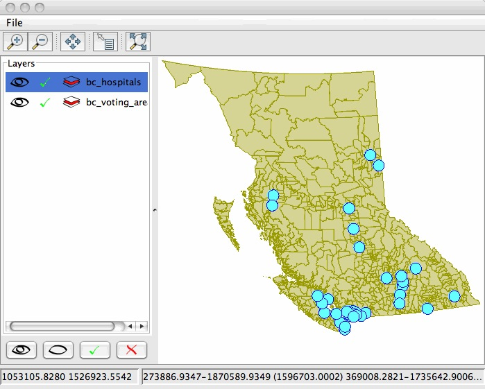

JMapFrame top-level component¶
JMapFrame packages up a JMapPane for a quick visual display. In GeoTools we often use this class to in our example code to show results.
Here is how to show a map:
MapContent content = new MapContent(); // add map layers here // Title will be used as the title for JMapFrame content.setTitle("The Map is Back"); // Show the Map to the user JMapFrame.showMap( content );The resulting map is displayed in a simple frame.
Please note that when the user closes the JMapFrame the application will exit.
To prevent this (say if you are using JMapFrame for debugging) please use the following:
JMapFrame show = new JMapFrame( content ); show.setDefaultCloseOperation( JFrame.DISPOSE_ON_CLOSE ); show.setVisible(true);
Turning on additional tools
By default JMapFrame only shows the JMapPane and is not very exciting.
To turn additional features on:
JMapFrame show = new JMapFrame( content ); // list layers and set them as visible + selected show.enableLayerTable( true ); // zoom in, zoom out, pan, show all show.enableToolBar( true ); // location of cursor and bounds of current show.enableStatusBar( true ); // display show.setVisible( true );
Here is JMapFrame with toolbar, status bar and layer table.

{kind=link}
{kind=link}